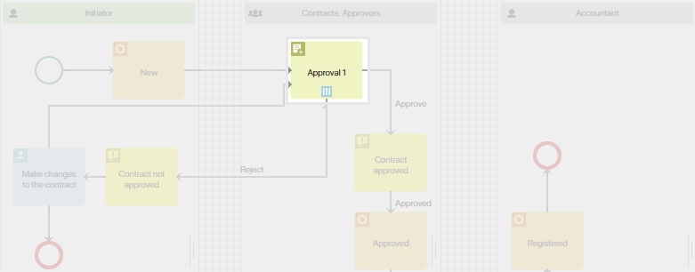
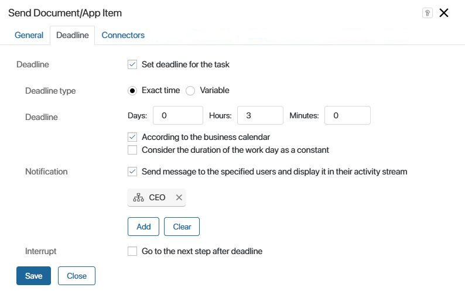
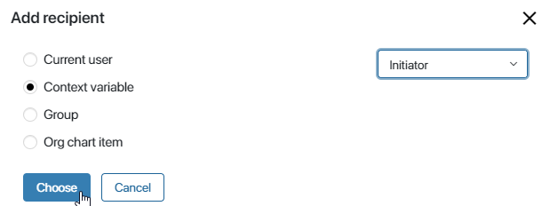
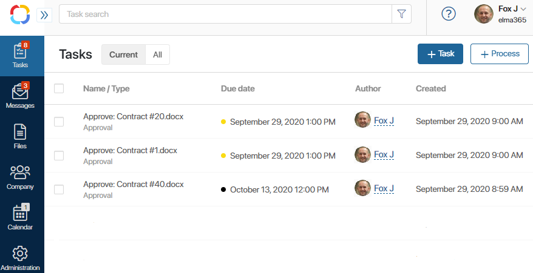
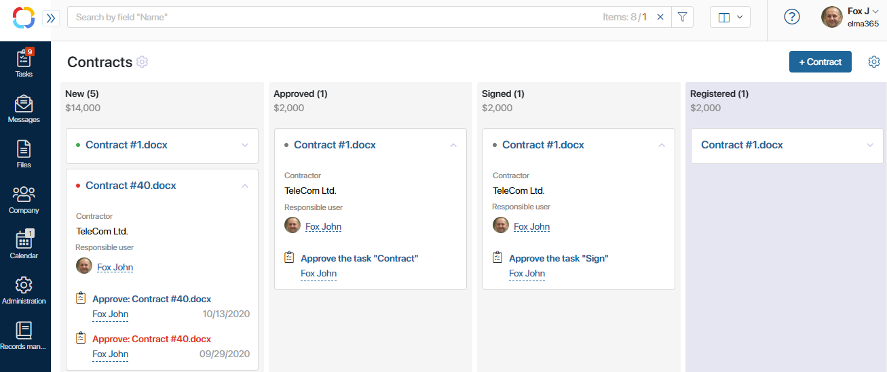

For some tasks, it is crucial to meet deadlines and stay on schedule. This is especially true when you think about customer communications. Quickly handled applications and timely delivered goods provide your competitive advantage.
Earlier, we have created the Approval business process. Now, let’s set a deadline for the tasks in this business process.
Set deadlines
Click the gear icon next to the name of the Contracts app. Select the Business processes item in the menu and open the Approval business process.
Double-click on the Approval task in the process diagram.

Go to the Deadline tab in the window that opens.

Select the Exact time option and specify the amount of time for the executor to spend on the task.
It may happen so that the task is not be completed by the specified time, despite the deadlines. In this case, control tools are needed to timely respond to the situation and take necessary measures.
Configure the Notification field: specify the users who will receive a notification if the deadline is not met. You can select the current user, the process initiator or an org chart item as the recipient.

Similarly, set the deadlines for any other tasks. Then, save and publish the process.
Monitor deadlines
Once the process is started and the task is assigned, a user will see its due date.

When a deadline is not met, a red dot appears next to its name.
On the contracts page, on the Kanban board, the overdue tasks are highlighted in red, and a red dot appears on the contract page.

This way you can easily identify a bottleneck in a business process and quickly take steps to eliminate it.
Schedule compliance
If a task has a deadline, you can also track schedule compliance. This is one of the important indicators reflecting an employee’s performance. It demonstrates how many tasks the employee completed in time within a month.
Select the Company tab in the left menu of the main page. On the page that opens, you can see your own schedule compliance.
Managers can also see the statistics of their subordinates.

Found a typo? Select it and press Ctrl+Enter to send us feedback